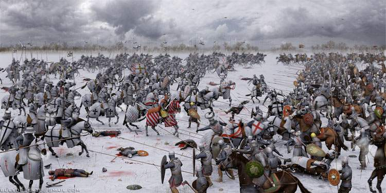
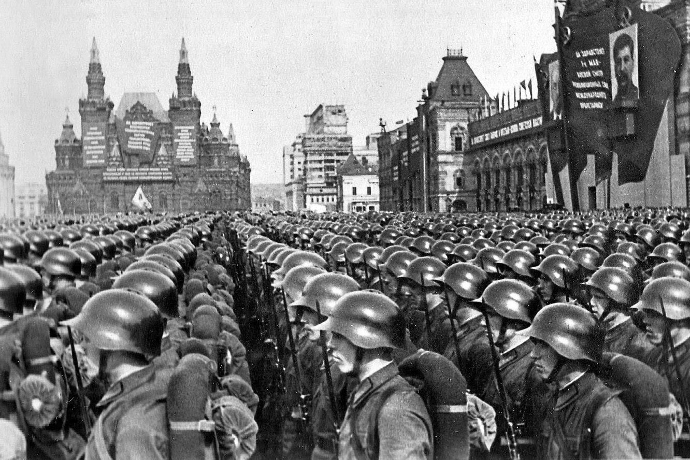
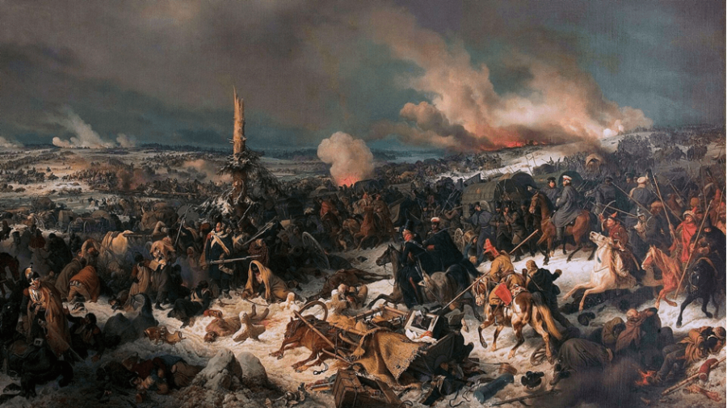
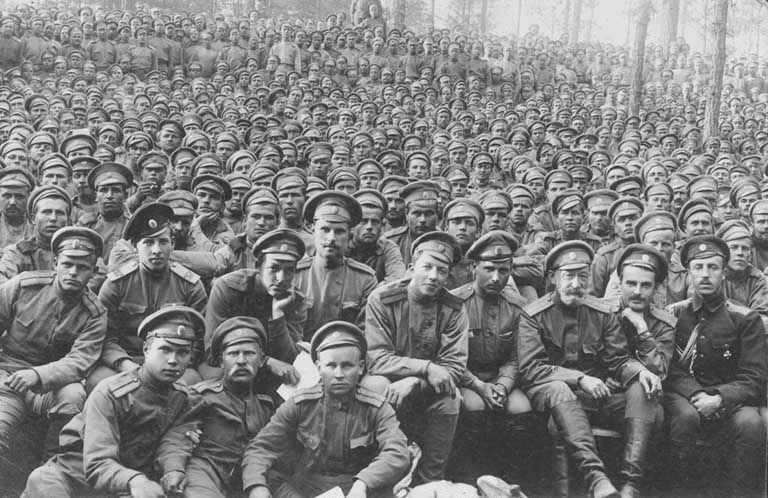

Россия — страна с богатой военной традицией. От борьбы с рыцарями и кочевниками до противостояния в мировых войнах и соревнования в космосе — каждое поколение сталкивалось со своими вызовами.
Битва на Чудском озере (1242)
Сражение на льду Чудского озера стало одним из символов сопротивления западной экспансии. Князь Александр Невский разгромил тевтонских рыцарей, остановив продвижение Ливонского ордена на восток.
Легенда о том, как тяжёлые рыцари проваливались под лёд, укрепила образ битвы в народной памяти и художественной культуре. Реальные детали могут отличаться от мифов, но значение победы остаётся бесспорным.
- Тактика: Использование особенностей местности, льда и построения войска для ослабления тяжёлой конницы противника.
- Результат: Закрепление влияния Новгородской республики и сохранение контроля над северо-западными землями.
- Исторический образ: Битва стала символом защиты православия и русской земли.
- Культурное влияние: Вдохновила летописи, живопись и фильм Сергея Эйзенштейна «Александр Невский».

Узнать больше
Вторая мировая война (1939–1945)
Крупнейший вооружённый конфликт в истории человечества, охвативший Европу, Азию, Африку и Тихий океан. Для СССР война началась в 1939 году на Дальнем Востоке и в Польше, а с июня 1941‑го основной фронт развернулся против нацистской Германии.
Советский Союз сыграл решающую роль в разгроме Третьего рейха: именно на Восточном фронте противник понёс наибольшие потери в людях и технике, а ключевые битвы определили исход всей войны.
- Ключевые театры боевых действий: Восточный фронт, Европа, Северная Африка, Тихоокеанский регион.
- Решающие сражения СССР: Оборона Москвы, Сталинград, Курская дуга, Висло‑Одерская операция, штурм Берлина.
- Союзники: Великобритания, США, Франция и другие страны антигитлеровской коалиции.
- Последствия: Создание ООН, начало «холодной войны», изменение политической карты мира и деколонизация.

О Второй мировой
Отечественная война 1812 года
Нашествие армии Наполеона и народная война против захватчиков стали одним из ключевых испытаний для Российской империи. Отступление русской армии вглубь страны и тактика «выжженной земли» лишили противника ресурсов и сломили его силы.
Бородинское сражение, оставшееся невыясненным в плане победителя, стало символом стойкости русских войск. В итоге армия Наполеона была вынуждена отступить, теряя людей и технику на каждом шагу.
- Ключевые сражения: Смоленск, Бородино, Тарутинский манёвр, взятие Парижа в 1814 году.
- Полководцы: М.И. Кутузов, Багратион, Барклай-де-Толли и многие другие.
- Народное ополчение: Крестьянские и городские отряды, партизаны, купечество и дворянство внесли огромный вклад в победу.
- Культурное наследие: Война 1812 года отразилась в произведениях Толстого, Жуковского, художников и композиторов.

Подробнее о 1812 годе
Россия в Первой мировой войне (1914–1918)
Российская империя вступила в Первую мировую войну на стороне Антанты, сражаясь против Германии и Австро‑Венгрии. Восточный фронт стал ареной масштабных сражений и тяжёлых потерь.
Военные неудачи, недостаток снабжения и внутренняя нестабильность усилили социальное напряжение, что стало одной из предпосылок революций 1917 года и последующего выхода России из войны.
- Ключевые операции: Галицийская битва, Брусиловский прорыв, оборона крепости Осовец.
- Проблемы фронта: Недостаток боеприпасов, слабая подготовка, сложная логистика и перегруженная экономика.
- Влияние на общество: Рост недовольства монархией, усиление революционных настроений, кризис доверия к власти.
- Последствия: Февральская и Октябрьская революции, Брестский мир и распад империи.

Первая мировая